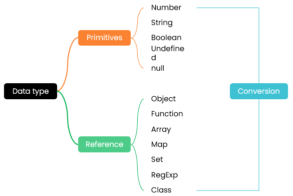

mindmap
JavaScript 是弱类型高级语言；运行时才能最终确定数据类型
不同类型的数据占用的存储空间不同。为了充分利用空间，需要指定相应的数据类型
基本数据类型：也叫值类型 value type；包括：number / string / boolean / undefined / null；基本数据存放于栈 stack
Primitives are copied by their value
复杂数据类型：也叫引用类型 reference type，即对象 Object；存放于堆 heap
Objects are copied by their reference
更多信息，请访问 数据类型
data_types 、类型检测 - typeof 、
实例检测 -
instanceof
基本数据类型 Primitives
1. Number
JavaScript 只有一种数字类型 Number：不带小数点的是整型；带小数点的是浮点类型，浮点数值在某些语言中也被称为双精度类型
默认是十进制
前缀0b：二进制；数码范围 0-1
前缀0o：八进制；数码范围 0-7
前缀0x：十六进制；数码范围 0-9,A-F
永远不要比较两个浮点数的相等
控制台输出时，显式蓝色
let num1 = 10;
let num2 = 0b10;
let num3 = 0o10;
let num4 = 0x10;
NaN：为捕获异常，系统还有一个特别的值：非数值 NaN - Not a Number；这个数值用于表示一个本来要返回数值的操作数却未返回数值的情况，这样就不会抛出错误了
NaN 与任何值都不相等，包括 NaN 本身
isNaN()：在接收到一个值之后，会尝试将这个值转换为数值。某些不是数值的值会直接转换为数值，例如字符串"10"或 Boolean 值。不能被转换为数值的值都会导致这个函数返回 true
console.log(NaN == NaN);//false
2. String
字符序列 - a sequence of characters
字符串可以由双引号（"）或单引号（'）表示，但是不能混用
可以使用转义字符，如 \t
可以使用十六进制表示1个字符，如 \xnn
可以使用十六进制表示1个 Unicode 字符，如 \unnnn
把一个数值转换为一个字符串，可以使用 toString() 或简单和1个空串拼接；toString() 也可以指定基数
表单和 prompt 输入框获取到的数据默认都是字符串类型
加号 +/- 可以将字符串数字转换为数字
字符串数字 - 可以转换为数字
控制台输出时，显式黑色
console.log('123');//黑色123
console.log(123 + '');//黑色123
console.log('123' - 0);//蓝色123
console.log(-'123');//蓝色-123
console.log(+'123');//蓝色123
console.log('123'-);//Error
字符串可以看作是一个特殊的数组，可以使用数组的相关函数，如数组解构
console.log([...'hello']);//输出5个字符的数组
3. Boolean
只有两个字面值：true 和 false
任何非空对象、非零数值、非空字符串都可以转换为 true；其他转换为 false；应确切地知道在流控制语句中使用的是什么变量
let flag1 = true
let flag2 = 1 > 2
4. Undefined
未声明或声明了变量但未初始化；因为 JavaScript 的弱类型特点，系统不知道你会保存什么类型的数据，且每个类型的数据默认值是不一样的，所以干脆给个未定义
只有1个值 undefined
一般而言，不要显式地把一个变量设置为 undefined - You'd rarely see code setting a value of a variable as undefined expddcity!
为方便使用，应显式地初始化变量为某个特定的值
let a;
console.log(typeof a);//undefined
console.log(typeof b);//undefined
5. Null
这个数据类型只有1个值：null
表示1个空对象指针；所以它是一个对象
如果定义的变量准备在将来用于保存对象，那么最好将该变量初始化为 null 而不是其他值
将变量的值设置为 null 可以清空变量
可以看作是占了一个位置
null 和 undefined 的相等操作符（==）总是返回 true，但它们的用途完全不同
更多信息，请访问 判断空值 undefined 和 null
var obj = null;
console.log(typeof obj);//object
console.log(null == undefined);//true
console.log(null === undefined);//false；null and undefined are not identical
6. BigInt
7. Symbol
引用数据类型 Reference
基本数据类型是按值访问，操作的是保存在变量中的实际的值
引用类型的值是保存在内存中的对象。与其他语言不同，JavaScript
不允许直接访问内存中的位置，也就是说不能直接操作对象的内存空间。在操作对象时，实际上是在操作对象的引用而不是实际的对象。为此，引用类型的值是按引用访问的
不存在定义某个变量必须要保存何种数据类型值的规则，变量的值及其数据类型可以在脚本的生命周期内改变
在将一个值赋给变量时，解析器必须确定这个值是基本类型值还是引用类型值
可以为引用类型的值其添加属性和方法，也可以改变和删除其属性和方法
不能给基本类型的值添加属性
除了保存的方式不同之外，在从一个变量向另一个变量复制基本类型值和引用类型值时，也存在不同：基本类型是值拷贝；而引用类型是同一个指向存储在堆中的同一个对象
对象 Object 在 {} 中以值对 key-value 的形式定义
对象其实就是一组数据和功能的集合
使用点语法或数组语法访问值对
函数 Function 可重复执行的代码块，可以接收参数；允许有返回值
检查数据类型：function
数组 Array 有序集合
以 [] 定义，每个数据可以是相同的数据类型，也可以是不同的数据类型；每个高级语言对数组数据项的要求不尽相同
检查数据类型，归类于 Object
let arr = [1, { name: 'gx' }, false, 'hi']
映射 Map 映射
ES6 新增数据类型
存储键值对的有序集合、不唯一
集合 Set ES6 新增数据类型
无序、唯一
类 Class ES6 新增数据类型
用于创建具有相同属性和方法的对象
正则表达式 RegExp 日期类 Date
数据类型转换 Data type conversion
更多信息，请访问 数据类型转换
- Data type conversion
隐式数据类型转换
显式数据类型转换
常用类型转换方法
item
desc
Number()
转换为数值类型
parseInt()
转换为整型
parseFloat()
转换为浮点类型
Boolean()
转换为布尔类型
console.log(parseInt('070'));//70
console.log(parseInt('hi70'));//NaN
console.log(parseInt('12.4px'));//12
console.log(parseFloat('12.4px'));//12.4
指定基数
console.log(parseInt('070', 8));
console.log(parseInt('70', 16));
console.log(parseInt('0x70', 16));//0x甚至可以省略
以下结果都为 false
Boolean(0)
Boolean(null)
Boolean(undefined)
Boolean(NaN)
计算器
let num0 = document.querySelector('#num0');
let num1 = document.querySelector('#num1');
let btn = document.querySelector('#btn');
btn.addEventListener('click', () => {
let res = parseInt(num0.value) + parseInt(num1.value);
if (isNaN(res)) {
alert('输入错误，请重试！');
} else {
alert(res);
}
})